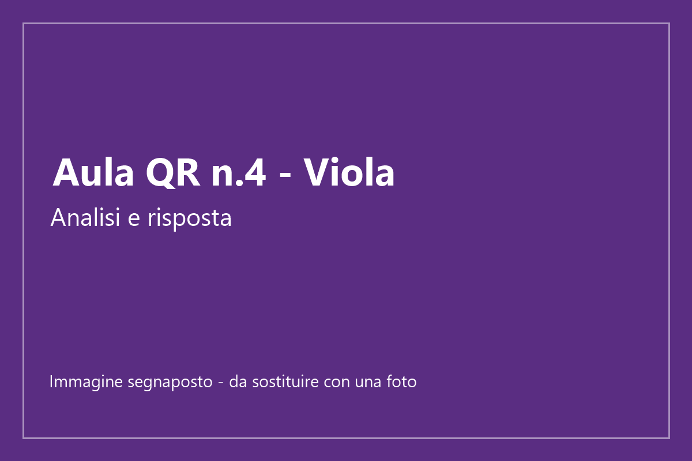

La cybersecurity non riguarda soltanto "fermare gli hacker": significa capire i rischi prima che diventino problemi.
In questo spazio approfondisci il lato analitico della figura professionale: ricerca e individuazione delle vulnerabilità, analisi forense, gestione degli incidenti e documentazione delle attività di sicurezza.
Un Cybersecurity Specialist deve sapere osservare i sistemi, interpretare ciò che accade e proporre misure di prevenzione efficaci.
È una professione che unisce curiosità, precisione, logica e capacità di ragionare sotto pressione.

Ultimo aggiornamento: 13/11/2026